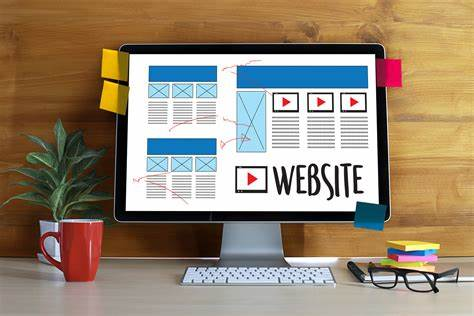
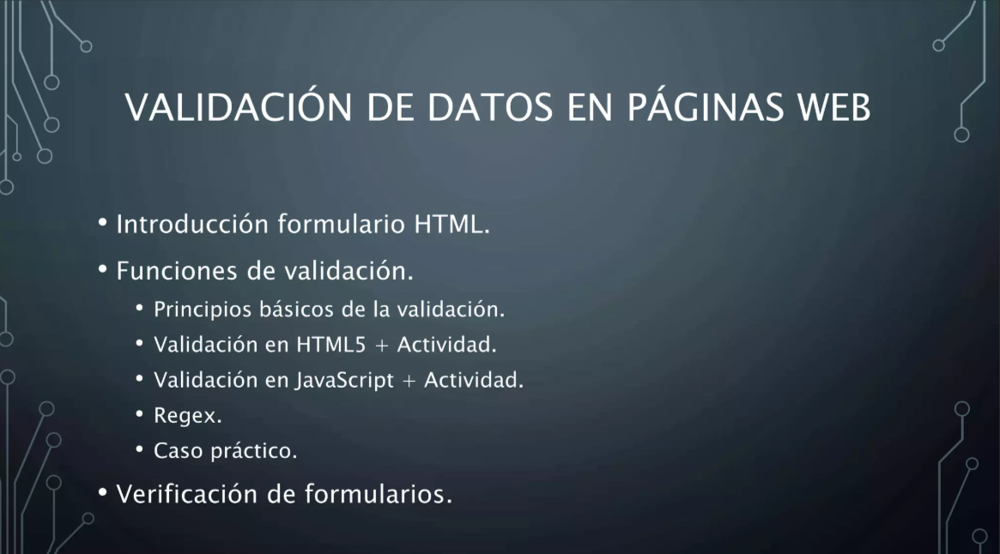

Etapas del desarrollo de páginas web
1. Planificacion y Analisis
La planificación y análisis es la primera etapa en el desarrollo de una página web y es clave para su éxito. En esta fase, se definen los objetivos del sitio, el público objetivo y las funcionalidades necesarias. También se analiza la competencia y se eligen las tecnologías adecuadas. Además, se crea un esquema o wireframe de la estructura para visualizar cómo será la navegación y distribución del contenido. Un buen análisis previo ayuda a evitar problemas en etapas posteriores y garantiza que la web cumpla su propósito de manera eficiente.

2. Diseño
El diseño de una página web se enfoca en la apariencia visual y la experiencia del usuario (UX/UI). En esta etapa, se crean wireframes y prototipos para definir la distribución de los elementos, los colores, la tipografía y otros aspectos gráficos. También se asegura que el diseño sea responsivo, adaptándose a distintos dispositivos. Un buen diseño no solo hace que la web se vea atractiva, sino que también mejora la usabilidad y la interacción del usuario con el sitio.
3. Desarrollo
La etapa de desarrollo convierte el diseño en una web funcional mediante la implementación de código. Se construye la estructura con HTML, se aplican estilos con CSS y se agrega interactividad con JavaScript. Si la web requiere backend, se configuran bases de datos y se integran APIs. También se optimiza el rendimiento y la seguridad. Un desarrollo bien estructurado garantiza que la página sea rápida, accesible y fácil de mantener.

4. Prueba y Optimizacion
La etapa de pruebas y optimización garantiza que la web funcione correctamente antes de su lanzamiento. Se realizan pruebas en distintos navegadores y dispositivos para detectar errores de compatibilidad, diseño o funcionalidad. También se optimizan los tiempos de carga, se revisa la seguridad y se mejora el SEO. Además, se evalúa la accesibilidad para que todos los usuarios puedan interactuar con la web sin dificultades. Un proceso de prueba riguroso asegura una experiencia fluida y sin fallos.
